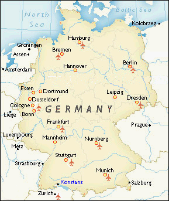
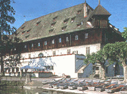
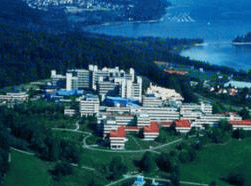
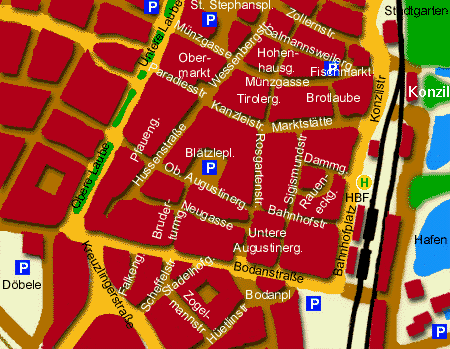

March 27-31 2000 · Konstanz - Germany
| Welcome |
| Program |
| Invited Talks |
| Photos |
| Tutorials |
| Software Demos |
| Collocated Events |
| Registration |
| Hotel Reservation |
| Travel Details |
| Organizers |
| Sponsors |
| Call for Papers |
| EDBT 1988-1998 |
| EDBT Endowment |
How To Get There
Konstanz is located at the shores of Lake Constance in
the very south-west of Germany (the conference location
actually is only about 500 m away from the border to Switzerland).
On a sunny day you have a perfect view of the Alps across
the lake.
Zurich Airport (Switzerland).
Your best bet is to fly to Zurich Airport. The
airport is no farther than 60 km away from Konstanz. The
Swiss Railway Network (SBB)
connects Konstanz and Zurich Airport. During daytime there is
at least one train per hour (train schedule).
Stuttgart Airport (Germany).
A viable alternative might be Stuttgart Airport.
This airport is about 120 km away but it is nevertheless
well connected to Konstanz by the German Bundesbahn AG (DB AG).
Trains are scheduled about every hour (train schedule)
Friedrichshafen Airport (Germany).
Just across the lake is Friedrichshafen Airport. It
does not take more than a 30 minute boat ride from there in
order to reach Konstanz. Friedrichshafen is a regional airport,
though, and thus exclusively connected to european cities.
Frankfurt Main Airport (Germany).
If you have to fly to Frankfurt Main
Airport take advantage of the airport's AIRail
Terminal, ICE-Line 3. The trip to Konstanz takes about
four hours.
Regional train connections (e.g. train rides from
Friedrichshafen Airport to Konstanz) are advertised at this site.

The Konzil (main conference) will host the informal Get
Together on Tuesday evening, the core EDBT 2000
conference, the paper sessions, the software demo track,
exhibitions, and the conference registration desk. The medieval
Konzil, originally built as a mercantile house, is located directly
at the lake-side but nevertheless in perfect walking distance (3
minutes) from the city center as well as the train station.
University of Konstanz (GI/SI meetings, tutorials,
PhD workshop) will be host
to a number of collocated events and meetings, notably the joint
GI/SI database SIG meetings, tutorials, and the EDBT 2000 PhD
workshop. The university is situated in the outskirts of Konstanz,
built on a hill that juts out next to the lake, but is well
connected to the city center by bus lines 9A and 9B.
  
From Konstanz station to the Konzil (main conference location).
On arrival at Konstanz station (labelled HBF on the left-hand map) you are
almost there:
From Konstanz station to the University (GI/SI meetings, tutorials, PhD
workshop).
Once again, Konstanz station is an ideal starting point:
Climate
The Konstanz climate is mild, even, and dry.
Climatic conditions are also sometimes referred to as
mediterranean since the lake acts as a natural heated pool
that regulates temperature. Do not expect the swimming season to have
already started during EDBT 2000, but you may very likely enjoy sunny
days (~ 16-20 °C/61-68 °F) and mild evenings. If
you like, check out the current
Konstanz weather conditions.
Konstanz and the Lake Constance Region
Travel Details
EDBT 2000
Hafenstrasse 2
D-78462 Konstanz
- Germany -
EDBT 2000
Computer and Information Science
Universitätsstrasse 10
D-78464 Konstanz
- Germany -
EDBT Endowment
In cooperation with the
VLDB Endowment Board
This site hosted by
U Konstanz,
DB Research Group